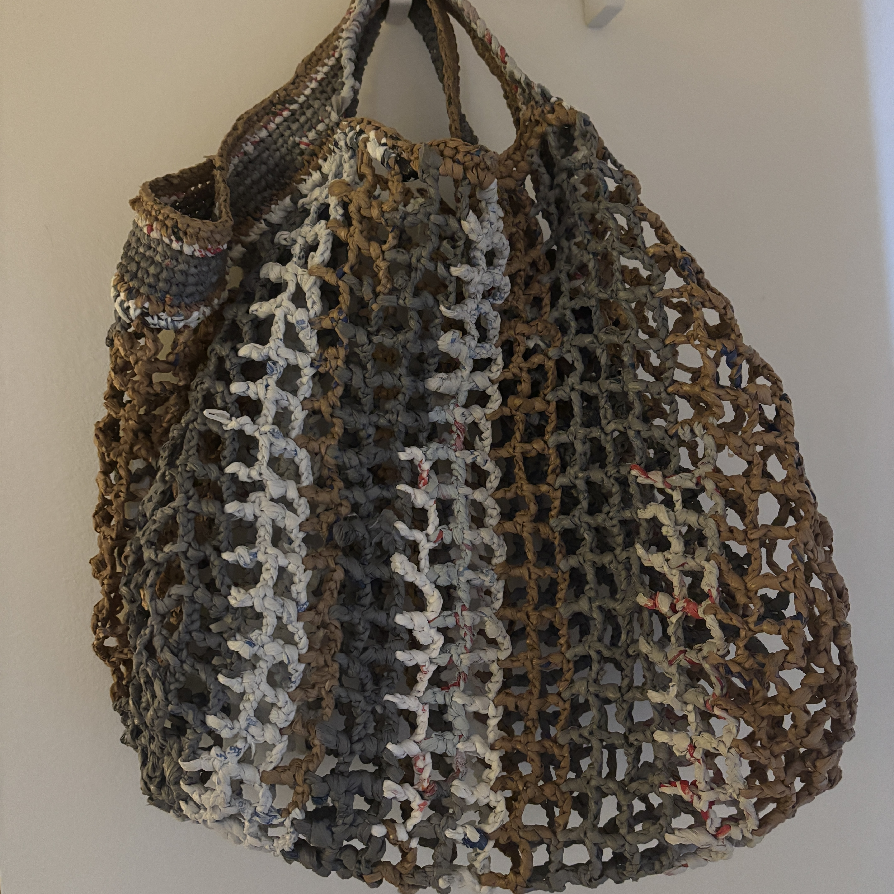
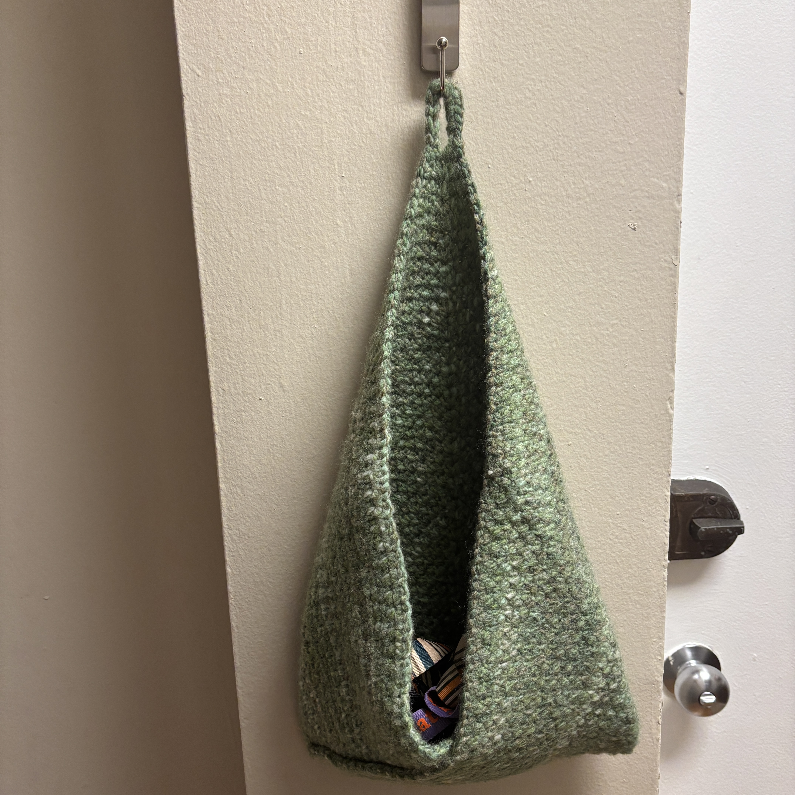

In the wash :(


I made these out of "plarn" using grocery bags (almost entirely from my parent's house--plastic bag regulations haven't quite caught on in Texas yet)


These are really nice, but lining them takes forever. It will probably be a few months until I get around to buying a zipper for the (unfinished) yellow one. RIP Joann's.

This was actually a really fun construction--I made a big triangle and then folded the ends in thirds and sewed up the bottom.
This blanket is probably my favorite creation. This is actually the second one I made--the first was for my mom. I love this thing. It's so big, and it's actually much heavier than it looks.